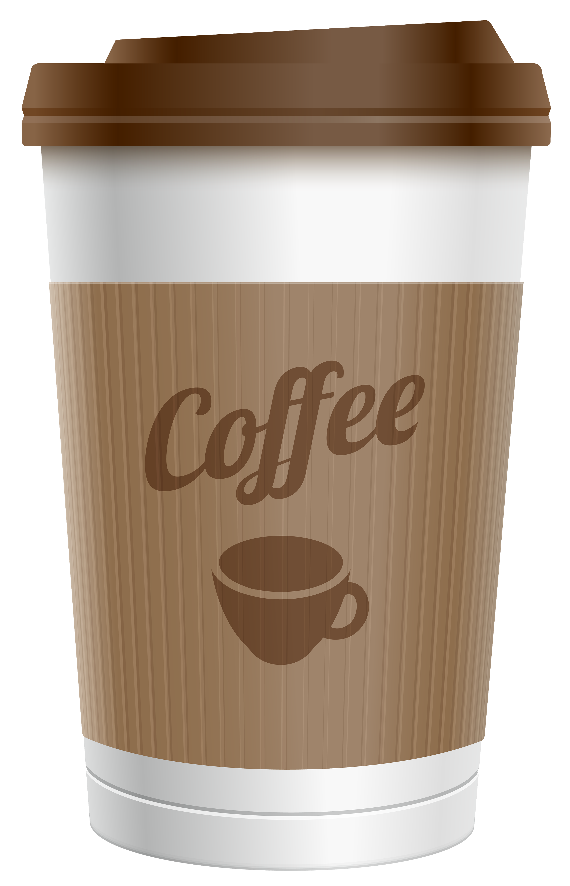
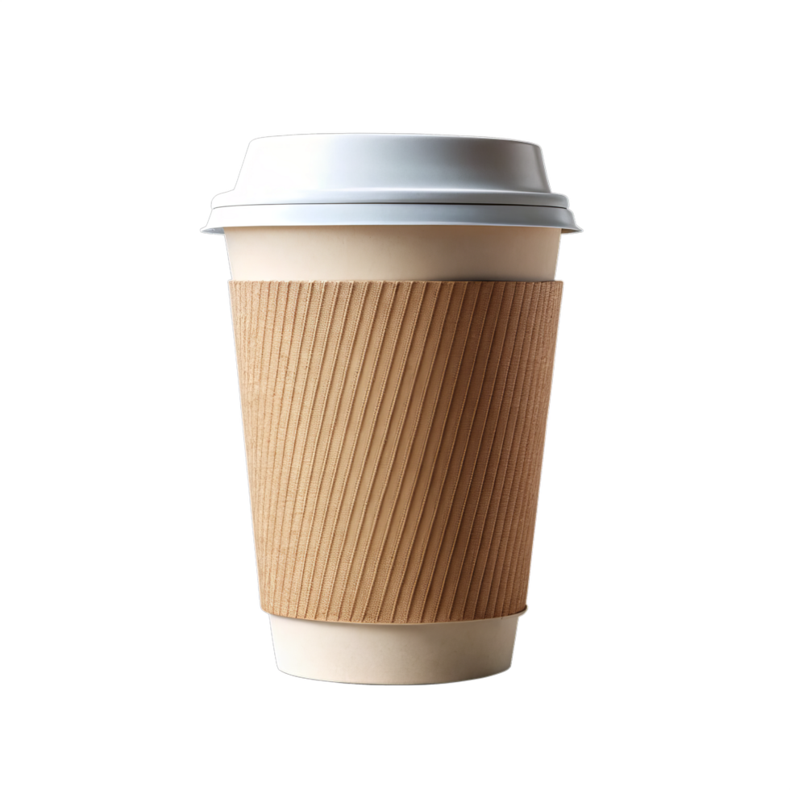

Новинки КофейОК!

Акция!
Миндальный Раф
Миндальный раф — это вариация классического раф‑кофе с ореховыми нотками. Напиток сочетает насыщенный вкус эспрессо, кремовую текстуру сливок и тонкий аромат миндаля. Он получается сладким, бархатистым и подходит любителям десертных кофейных напитков.
99.9Р за 250мл
Акция!
Латте с карамелью
Латте с карамелью — кофейный напиток, который сочетает эспрессо, молоко и сладкий карамельный сироп. Изначально появился в кофейнях США как вариация классического латте, но быстро распространился по всему миру. Главный секрет напитка — правильный баланс между крепостью кофе и сладостью карамели.
99.9Р за 250мл
Акция!
Ванильный каппучино
Ванильный капучино — это кофейный напиток, в котором к классическому сочетанию эспрессо и молочной пены добавляют ваниль для мягкого аромата и вкуса. Его можно приготовить дома или заказать в кофейне.
99.9Р за 250мл

Как простая чашка чая изменила всё
В 2018 году обычный офисный работник Алексей понял, что устал от безвкусного кофе из автомата. Каждое утро он мечтал о настоящем кофе — с пенкой, ароматом какао и тем самым послевкусием, которое заставляет улыбаться. Однажды в командировке в маленьком итальянском городке он зашёл в кофейню, которой управлял 70-летний синьор Джузеппе. Тот не использовал кофемашины — только ручную варку, песочные часы и своё сердце. Алексей выпил чашку и влюбился.
— Секрет не в зернах, — сказал Джузеппе. — Секрет в том, что каждую чашку ты варишь для друга.
Вернувшись домой, Алексей уволился, полгода учился обжарке зёрен, нашёл помещение с большими окнами на солнечной стороне и открыл «КофейОК».
«КофейОК» — потому что каждая чашка должна быть в порядке» ☕

В чем секрет нашего кофе?
Мы не покупаем готовые зёрна в мешках с маркировкой "премиум". Мы работаем напрямую с фермерами из Эфиопии, Коста-Рики и Колумбии. Каждую партию обжариваем вручную маленькими объёмами — так мы контролируем вкус на каждом этапе. Главное — это вода. Мы используем трёхступенчатую фильтрацию, чтобы в чашке не было привкуса хлорки или металла. И последнее: мы варим кофе при температуре 88–92 градуса. Ниже — будет кислить. Выше — сгорит горечью. Бариста «КофейОК» не нажимает кнопки на автомате. Он смотрит на пенку, слушает звук и чувствует момент, когда нужно остановиться. Поэтому наш кофе не горчит. Он раскрывается медленно — как хорошая музыка или разговор с другом.
Свяжитесь с нами
Забронируйте столик или задайте вопрос